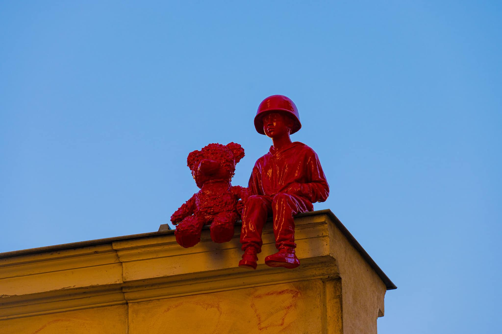
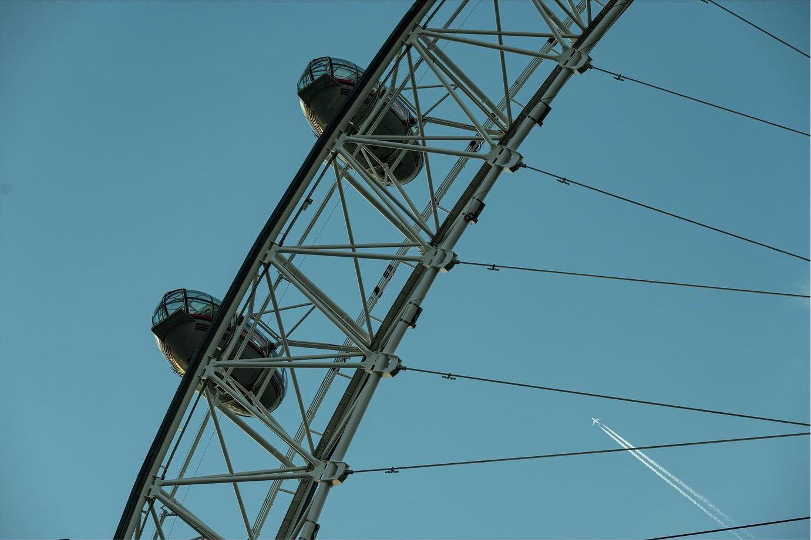
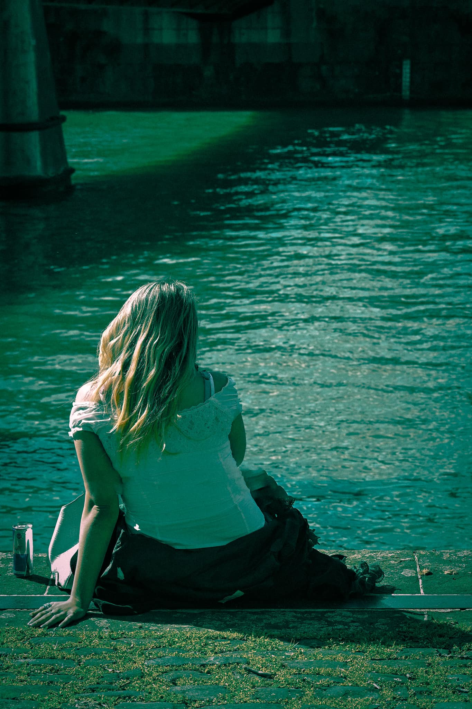
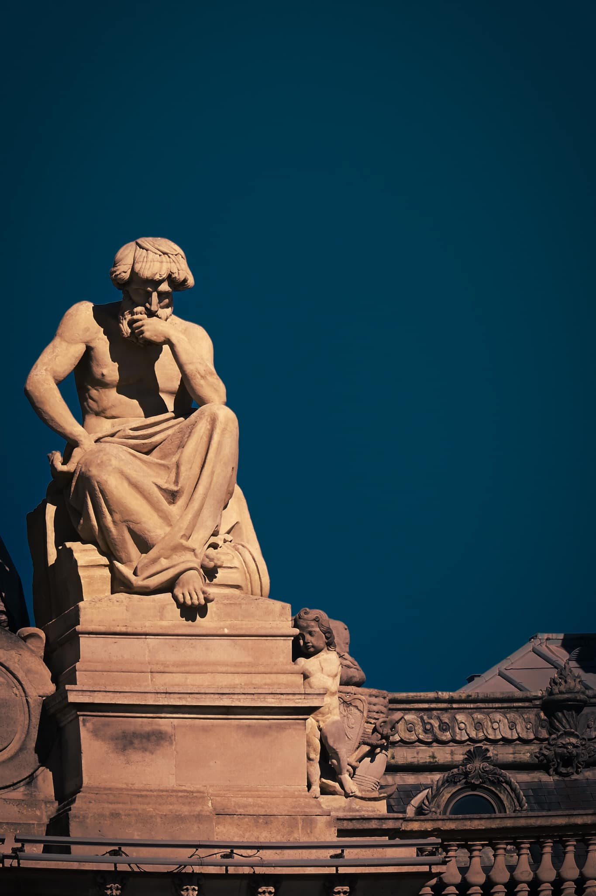

Sometimes..I just like to grab my camera and go somewhere, and try to capture random stuff but also something which will have a sense of uniqueness in it, and, well street photography it's one of the best things to do such thing. In one of the days, I just woke up and I said will go around Bristol Harbour and try to capture something interesting. I took quite few shots, of people, seaguls, boats everything...but the image which fascinated me the most was this capture of this girl..who..was just relaxing and day dreaming, the atmosphere around the city was very relaxed in that day, weather was nice..and this image just transmitted me the vibe of that day
Earlier this year I went to Paris for a few days..and among other plans,visiting some places, eating at some interesting restaurants I obviously took my camera as well with the same plan in mind, to just try to capture something with a sense of uniqueness, something that will tell and transmit a story to me and others. While I was walking around the narrow streets in Paris,I stoped initially to buy something and then when I turned around, it just caught my eye...on a top a building..well hidden somewhere in Paris..these little two statues,..this "friends frozen in time" how I like to describe them..just told me the story which I was seeking.